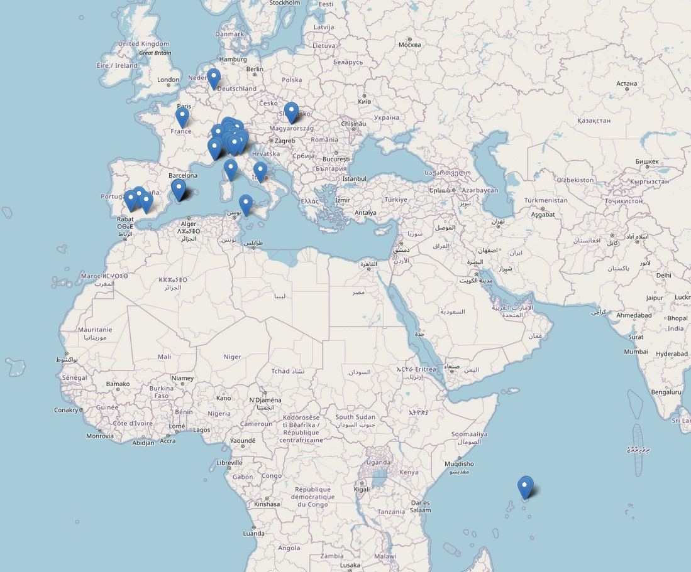
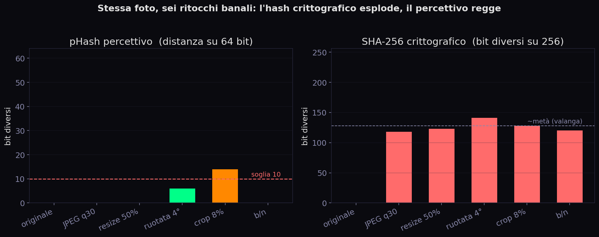
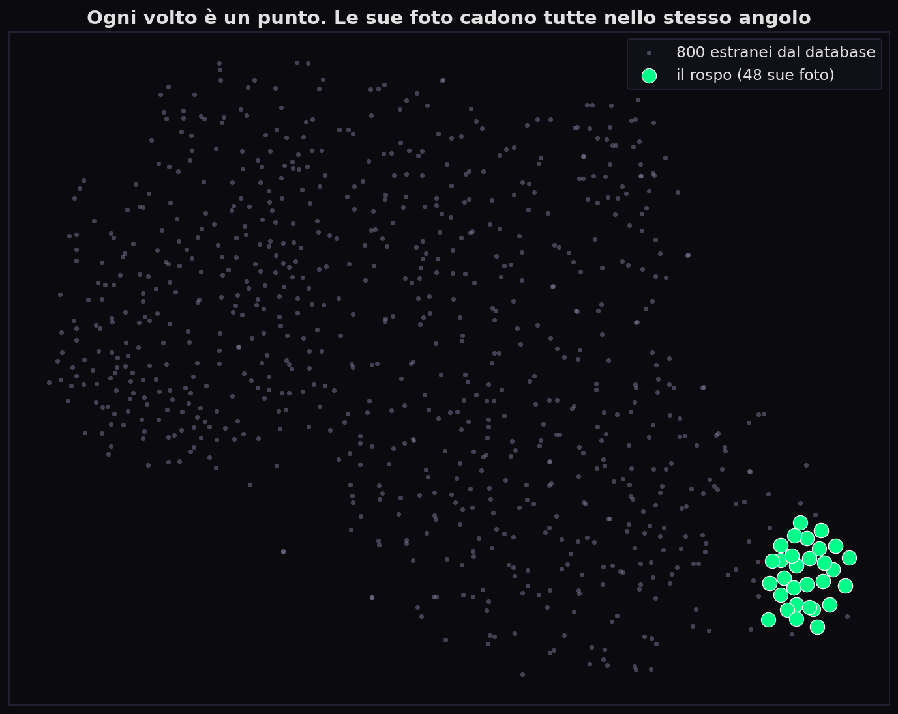
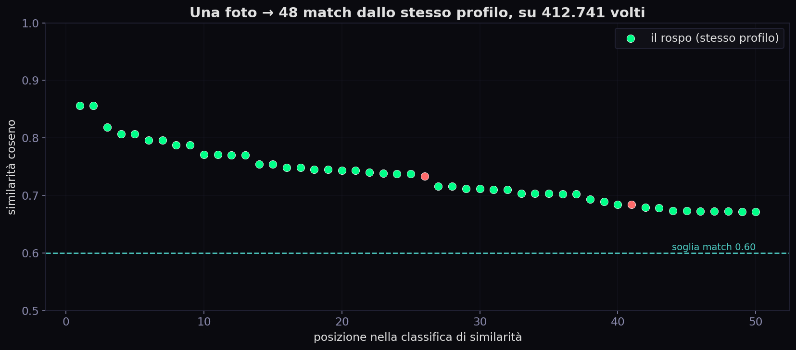

// «Tanto devi conoscermi»
Sezione 01. La domanda del rospoIl rospo del male, mia figlia, venticinque anni, che mi chiama Papi e mi tratta come un reperto, ha letto il pezzo sulla trilaterazione delle app di incontri e ha sentenziato: «Per fortuna io quelle app non le uso». Tono di chi ha appena vinto una discussione che non era cominciata.
Le ho detto che usa Instagram, e che Instagram è peggio. Mi ha guardato come si guarda un padre. Allora le ho aperto sul telefono una mappa con dei puntini: Milano, Parma, Formentera, la Costa Azzurra, le Seychelles del mese scorso. I suoi spostamenti, ricostruiti da sessantadue luoghi taggati nei suoi post pubblici. Non gliel'avevo chiesto. Era tutto lì, in chiaro.

«Vabbè, i posti dove sono stata. Ma devi conoscermi, Papi. Non è che mi vedi per strada e risali al mio profilo». Si è seduta sicura, gambe incrociate, l'aria di chi ha chiuso la discussione.
«Quindi mi stai dicendo che uno mi fotografa in metropolitana e trova il mio Instagram».
«Esatto».
«Ma dai, Papi. Non esiste».
Esiste. È esattamente ciò che oggi un estraneo qualsiasi può fare: una foto scattata per strada, e in mezzo secondo nome, profilo, e i sessantadue posti dove sei stata. Stanotte glielo dimostro. Non sto parlando di teoria: fra qualche ora una sua foto qualunque finirà dentro un archivio di centinaia di migliaia di volti, e il sistema tirerà fuori il suo profilo. Ma per arrivarci serve capire una cosa che sembra banale e non lo è: come fa un computer a dire che due facce sono la stessa faccia.
// L'Hash Che Non Serve
Sezione 02. Perché la crittografia qui falliscePrimo tentativo, quello istintivo: calcolo l'hash delle due immagini e li confronto. SHA-256 prende un file e ne sputa 256 bit; se due file hanno lo stesso hash, sono lo stesso file. Ma SHA è fatto apposta per l'opposto di quello che mi serve: ha l'effetto valanga, cambi un solo bit e metà dell'output si ribalta. Ho preso una foto del rospo e l'ho ritoccata in sei modi banali, quelli che subisce ogni immagine su Instagram. Ecco gli SHA reali:
| Ritocco | SHA-256 (primi 16 hex) | Distanza pHash |
|---|---|---|
| originale | 43a820923c52dd70… | 0 |
| JPEG qualità 30 | b3806e9e3cb88416… | 0 |
| ridimensionata 50% | 819ca28fc81106c3… | 0 |
| ruotata 4° | 9842c5e1dc042cf3… | 6 |
| ritagliata 8% | 1de42eaf9335c776… | 14 |
| bianco e nero | c1110a4377309387… | 0 |
Sei hash completamente diversi: per SHA quelle sono sei immagini estranee, anche se a occhio sono la stessa foto. Basta che Instagram ricomprima il JPEG e l'hash non combacia più con niente. La crittografia risponde alla domanda sbagliata, «è lo stesso file?», quando a me serve «è la stessa persona?».
// L'Hash Che Perdona
Sezione 03. pHash: la stessa immagine, non la stessa personaLa risposta a «è la stessa immagine?» si chiama hash percettivo (pHash). L'idea è ribaltare la logica di SHA: invece di esplodere a ogni minimo cambiamento, deve restare stabile finché l'immagine, per un occhio umano, è la stessa. La ricetta del pHash più diffuso:
- Riduci l'immagine a 32×32 pixel in scala di grigi. La compressione butta via i dettagli e tiene la struttura grossa.
- Applica la DCT (Discrete Cosine Transform, la stessa trasformata che sta dentro il JPEG): scompone l'immagine in frequenze spaziali.
- Tieni solo il blocco 8×8 in alto a sinistra, le frequenze più basse, cioè la forma generale, non il rumore.
- Per ognuno dei 64 coefficienti: 1 se è sopra la mediana, 0 se sotto. Ecco 64 bit.
Due immagini si confrontano con la distanza di Hamming: quanti dei 64 bit differiscono. Convenzione comune: sotto i 10 bit, stessa immagine.
Distanza di Hamming fra due pHash. ≤ 10 ⇒ stessa immagine.
Torna alla tabella di prima, colonna destra. JPEG al 30%, ridimensionamento, perfino il bianco e nero: distanza 0. Il pHash non si accorge nemmeno. La rotazione di 4° costa 6 bit, il ritaglio dell'8% ne costa 14, e qui il pHash comincia a cedere, perché le trasformazioni geometriche spostano la struttura, non solo i colori. Questo è il limite che conta:
Il pHash riconosce la foto, non la persona. Se qualcuno ripubblica quel preciso scatto, lo ritrovi anche dopo recompressione. Ma se il rospo posta un'altra foto, stessa faccia, luce diversa, altro vestito, tre anni dopo, il pHash non c'entra niente: è un'immagine nuova, struttura diversa, distanza enorme. Per inseguire la persona e non il file serve salire di un piano. Serve un modello che guardi la faccia e non i pixel.

// Il Volto Diventa Un Punto
Sezione 04. L'embedding: 512 numeriIl salto concettuale è del 2015, paper di Google: FaceNet. L'idea: addestrare una rete neurale a trasformare l'immagine di un volto in un vettore, una lista di numeri, con una regola sola. Due foto della stessa persona devono finire vicine nello spazio dei vettori; due foto di persone diverse devono finire lontane. Niente regole sui nasi e sulle distanze fra gli occhi: la rete impara da sola cosa rende un volto quel volto.
Lo strumento di addestramento è la triplet loss. Si prendono tre foto alla volta: un'ancora \(a\) (una faccia), un positivo \(p\) (stessa persona), un negativo \(n\) (un'altra persona). La rete viene spinta a fare in modo che l'ancora sia più vicina al positivo che al negativo, con un margine \(\alpha\):
f() è la rete. Avvicina te-a-te, allontana te-dagli-altri. Ripetuto su milioni di triplette.
Dopo milioni di triplette, la rete \(f\) è una funzione che mangia un volto e restituisce un punto in uno spazio a molte dimensioni. Il modello che ho usato qui, Facenet512, erede diretto di quel paper, produce 512 numeri.
Cosa vuol dire «512 dimensioni»? Immagina un foglio con due coordinate, X e Y: ogni punto è una coppia di numeri. Aggiungi una terza coordinata e sei nello spazio; una quarta, una quinta, e smetti di poterlo disegnare. Vai avanti fino a 512. Non c'è più niente da immaginare, ma la matematica non se ne accorge: ogni volto resta un punto, e di due punti puoi sempre misurare quanto sono vicini. Quella distanza è tutto. La vicinanza fra due volti si misura col coseno dell'angolo fra i loro vettori: 1.0 = identici, 0 = nessuna relazione.
Similarità coseno fra due embedding. Con vettori normalizzati, è solo il prodotto scalare.
La differenza con il pHash è tutta qui: l'embedding è (in larga misura) invariante a luce, posa, taglio di capelli, qualche anno in più, una mascherina, un paio di occhiali. Non guarda i pixel: guarda l'identità che i pixel suggeriscono. È per questo che riconosce la persona dove il pHash vede solo due file diversi.

// Ecco Cosa Salvo Di Te
Sezione 05. La foto è loro, il numero è mioQuesto è il volto del rospo, dato in pasto a Facenet512. Non ti mostro la foto. Ti mostro quello che resta della foto dopo che la rete l'ha digerita, i primi 16 dei suoi 512 numeri:
0.0523, −0.0649, 0.0307, 0.0025, −0.0276, −0.0274, −0.0094, −0.0546, … ]
Vettore L2-normalizzato (norma 1.0), 512 componenti, valori in [−0.12, +0.13]. Questo è il rospo, secondo la macchina.
Sembrano numeri innocui. Sono il punto più pericoloso dell'articolo, per un motivo che è giuridico prima che tecnico.
La foto resta loro, il numero diventa mio. Le condizioni di Instagram e il diritto d'autore proteggono l'immagine: non puoi scaricarla, ripubblicarla, rivenderla. Ma l'immagine io la cancello. Tengo questi 512 numeri, che non sono la foto: sono una misura estratta da essa. Il copyright protegge l'opera, non la misura. È un buco: aggiri il divieto di salvare le foto semplicemente non salvandole, salvi i vettori.
Tranne che il buco si richiude da un'altra parte, e di colpo. Per il GDPR quel vettore, calcolato al fine di identificare in modo univoco una persona, è un dato biometrico: articolo 9, «categoria particolare». Il regime più severo che esista in Europa: vietato trattarlo salvo basi giuridiche strettissime, consenso esplicito in testa. Quindi la posizione di chi costruisce un database così è schizofrenica per legge: grigia dal lato copyright (non ho copiato nessuna opera), nera dal lato privacy (ho schedato la biometria di una persona). Lo stesso file di numeri, due rami del diritto che dicono il contrario.
// Trovarti In Mezzo A 412.741
Sezione 06. La ricerca, e la dimostrazioneAvere il vettore di un volto è metà del lavoro. L'altra metà: data una faccia nuova, trovarla in un archivio di centinaia di migliaia. Confrontarla una a una con 412.741 vettori a ogni ricerca sarebbe lento. Si usa una struttura ad indice approssimato (HNSW: un grafo navigabile a più livelli): invece di guardare tutti, si cammina nel grafo verso i vicini sempre più simili, e si arriva ai più prossimi in millisecondi visitandone una manciata.
Ho un database personale di 412.741 volti, ognuno un vettore Facenet512, messo insieme in una notte raschiando profili Instagram pubblici. Che siano quattrocentomila o quaranta milioni cambia poco: la matematica è identica, scala soltanto la dimensione del pagliaio. Ho preso una foto qualsiasi del rospo, ne ho estratto il vettore, e ho cercato. Risultato reale, soglia di match a 0.6 di coseno:
| Soglia coseno | Volti trovati | Profili distinti | Lettura |
|---|---|---|---|
| ≥ 0.85 | 2 | 1 | certezza assoluta, è lei |
| ≥ 0.75 | 15 | 1 | sempre e solo il suo profilo |
| ≥ 0.60 | 50 | 3 | 48 lei + 2 sosia casuali |
Una foto sola, e ne escono 48 sue, tutte dallo stesso account, con punteggi fino a 0.86. Non le ho cercate per nome: le ha trovate la geometria. E nel risultato, accanto a ogni match, c'è il post_url e l'username: dal numero si torna al profilo, e dal profilo al nome. Io qui ti mostro solo i numeri. Il ponte verso l'identità, però, è quei numeri.

I due sosia sono la lezione, non un errore. Sopra 0.75 il sistema è chirurgico: un solo profilo. Ma abbassando la soglia a 0.60 entrano due volti di persone diverse. È il trade-off di ogni sistema biometrico: alza la soglia e rischi di non riconoscere te stesso con la luce sbagliata (falso negativo); abbassala e cominci a confondere estranei (falso positivo). Non esiste una soglia «giusta»: esiste solo dove decidi di sbagliare. Clearview, la polizia, lo sblocco del telefono, ognuno taglia in un punto diverso della stessa curva.
«Sì, vabbè, ma sbaglia». Certo che sbaglia. Non è magia: i falsi positivi esistono, i gemelli lo ingannano, una faccia sfocata o di tre quarti peggiora tutto. Ma il punto non è che sia perfetto. Il punto è che funziona abbastanza bene da girare già oggi negli aeroporti, nelle questure e nel telefono che sblocchi con la faccia. Per essere un problema non deve essere infallibile: deve solo essere abbastanza buono. E lo è.
// Non L'Ho Inventato Io
Sezione 07. Clearview, e il grigio legaleIl mio database casalingo da 412.741 facce è un giocattolo. La versione industriale si chiama Clearview AI: oltre 30 miliardi di volti raschiati da social e siti pubblici, venduti come motore di ricerca facciale alle forze dell'ordine. Esattamente la stessa pipeline, volto → embedding → ricerca per similarità, moltiplicata per cinque ordini di grandezza. In Europa è stata multata a ripetizione: il Garante italiano, quello francese, quello greco, l'olandese, ognuno milioni di euro, proprio sull'articolo 9.
Lo scarto giuridico che li tiene in piedi è quello del rospo: scaricare dati pubblici è una zona grigia che negli USA una corte (hiQ v. LinkedIn) ha in parte tollerato, e «noi non conserviamo le foto, conserviamo vettori» è la difesa ricorrente. In Europa quella difesa non regge, il vettore biometrico è dato personale e basta, ma il fatto che la discussione esista dice tutto. E si lega al pezzo sulle app di incontri: lì da una manciata di distanze si arrivava al quartiere; qui da una faccia per strada si arriva al profilo, e dal profilo, coi luoghi taggati, al quartiere. La mappa dei puntini del rospo l'ho ricostruita così: città, non indirizzi, ma da una sua foto al mare il resort esatto si trovava in due clic. Due vettori OSINT diversi che convergono sulla stessa persona.
// Come Proteggerti
Sezione 08. Cosa puoi fare davveroNon c'è un bottone che ti cancella dai vettori già estratti: una volta che la tua faccia è in un database così, è difficile uscirne. Ma la superficie d'attacco si riduce, e alcune contromisure sono reali.
- Profilo privato. Lo scraping di massa colpisce i profili pubblici. Un profilo chiuso non finisce nei dataset costruiti raschiando l'aperto. È la singola mossa che pesa di più.
- Meno volto frontale, nitido, in chiaro. L'embedding ha bisogno di un volto ben visibile. Foto di gruppo, di tre quarti, lontane, danno vettori più rumorosi e match più deboli.
- Perturbazioni avversarie. Strumenti come Fawkes (Università di Chicago, 2020) alterano la foto in modo invisibile all'occhio ma sufficiente a spostare l'embedding: la rete vede una «faccia» diversa. Non è infallibile e invecchia man mano che i modelli migliorano, ma alza il costo.
- Geolocalizzazione. Togli i tag di luogo, non postare in tempo reale da dove ti trovi, controlla cosa rivela lo sfondo. La faccia ti identifica, ma sono i metadati a dire dove sei.
- Consapevolezza. La più importante. Una foto pubblica non è «solo una foto»: è una riga in un indice biometrico che non sai chi tiene. Decidere cosa è pubblico con questo in testa è già metà della difesa.
// Il Numero Ti Riconosce
Sezione 09. ConclusioneHo girato il telefono verso il rospo. Una sua foto qualsiasi, e sotto la lista: 0.86, 0.86, 0.82… quarantotto righe, tutte lei, pescate da un mucchio di quasi mezzo milione di facce che non sapeva esistesse. «Non ti ho cercata», le ho detto. «Ti ha trovata la matematica. Una foto per strada bastava».
È rimasta zitta più a lungo del solito. Poi: «Quindi quello che mi dicevi delle app di incontri…». Vale anche per quella che usi ogni giorno, sì. Anzi peggio: l'app strana la scarichi apposta, Instagram lo guardi senza pensarci. La faccia non la cambi e non la fai privata. La foto la proteggono. Il numero che ne esce, no.
Su Instagram non puoi salvare le foto. Ma il numero che sei, quello lo salvano tutti. Non serve che qualcuno sappia chi sei: basta che ti abbia visto una volta. La foto dura un secondo, il vettore può durare per sempre. E il numero ti riconosce.
Facenet512, vettore a 512 dimensioni, distanza coseno. Database di 412.741 volti raccolti in una notte da profili pubblici. Una probe → 48 match dallo stesso account, fino a 0.86 di similarità. SHA-256 crolla a un pixel, il pHash regge la ricompressione ma non la persona, l'embedding regge la persona. Il copyright protegge l'immagine; il GDPR Art. 9 protegge te. Lo stesso file di numeri. Il rospo, per la prima volta, non aveva più niente da rispondere.
Signal Pirate